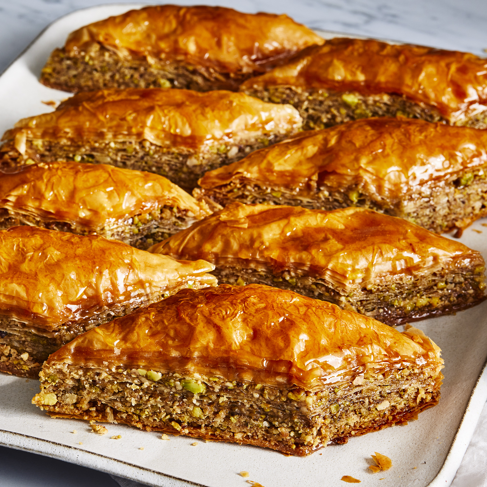

Baklava

Description
This delicious flaky treat is made out of puff pastry, honey, and nuts. It's mediterranean in nature, and it can be a light finisher for a fantastic meal!
Ingredients
- 1 (16 ounce) package phyllo dough
- 1 pound chopped nuts
- 1 cup butter
- 1 teaspoon ground cinnamon
- 1 cup water
- 1 cup white sugar
- 1 teaspoon vanilla extract
- ½ cup honey
Steps
- Preheat oven to 350 degrees F(175 degrees C). Butter the bottoms and sides of a 9x13 inch pan.
- Chop nuts and toss with cinnamon. Set aside. Unroll phyllo dough. Cut whole stack in half to fit pan. Cover phyllo with a dampened cloth to keep from drying out as you work. Place two sheets of dough in pan, butter thoroughly. Repeat until you have 8 sheets layered. Sprinkle 2 - 3 tablespoons of nut mixture on top. Top with two sheets of dough, butter, nuts, layering as you go. The top layer should be about 6 - 8 sheets deep.
- Using a sharp knife cut into diamond or square shapes all the way to the bottom of the pan. You may cut into 4 long rows the make diagonal cuts. Bake for about 50 minutes until baklava is golden and crisp.
- Make sauce while baklava is baking. Boil sugar and water until sugar is melted. Add vanilla and honey. Simmer for about 20 minutes.
- Remove baklava from oven and immediately spoon sauce over it. Let cool. Serve in cupcake papers. This freezes well. Leave it uncovered as it gets soggy if it is wrapped up.